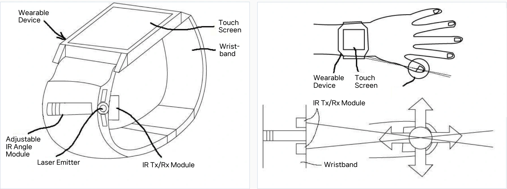

Utility model / 20-0485654
Thumbnail Trackpad
An infrared input concept that uses the thumbnail as an external trackpad for a wearable device.
- Type
- Utility model
- Registration no.
- 20-0485654
- Registered title
- Wearable Device Track Pad Using Infrared Light
- Registration record
- View on KIPRIS DOI
- Project status
- Registered concept
An input surface on the body
Small wearable screens leave little room for precise touch input. A finger can also cover the part of the screen the person is trying to control. I proposed using the thumbnail as an additional input surface for a wearable device.
The concept places infrared sensing on the wearable. Movements of the index finger over the thumbnail are interpreted as trackpad input, allowing the screen to remain visible during interaction.
{kind=link}

Proposed sensing mechanism
Align the sensing area
An adjustable infrared module is aligned to the wearer’s hand. A laser emitter briefly marks the intended thumbnail input area during alignment.
Define the input axes
Infrared transmitters and receivers establish an X–Y sensing area over the thumbnail.
Detect finger movement
Reflected infrared signals are used to estimate the position and movement of the index finger, including swipes and taps.
Control the wearable
The recognized movement is transmitted to the wearable and used as a control signal for its screen.
Development direction
This is a registered interaction concept. Its proposed contribution is a small, readily available input surface on the body, with adjustable sensing geometry to account for differences in hand size.
Further development would involve building a hardware prototype and evaluating gesture recognition and alignment. A camera-assisted initial setup is one possible refinement; the proposed interaction itself uses infrared sensing.